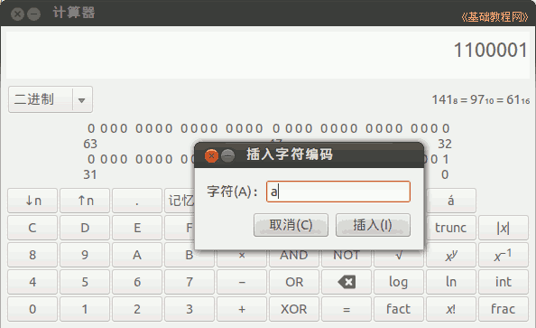

2011-2012 第一学期七年级电脑操作教学设计
作者：TeliuTe 来源：基础教程网
十八、学会文件编码 返回目录 下一课
（一）教学设计
1、学习目标：学会文件编码
2、注意事项：开两个计算器，分别对应数字和字符的
3、教学过程：
1）教师准备学案和板书；
2）学生整队进入，开机抄黑板上笔记；
3）教师讲解板书演示操作；
4）学生打指法、日志、完成操作；
5）教师打勾记录学生指法成绩，检查日志和操作；
注：学生抄完笔记就开始打指法、日志，老师讲完后再继续完成；
（二）板书设计(学生笔记)
第18课 学会文件编码
1、文本文件ＡＳＣＩＩ码来编码
2、用0和1来组成各种文件二进制
3、文件中的数字、文字、图形最终是0和1
4、在文件开头有文件类型标识。
5、输CAI计算器，模式编程。
操作图示：

（三）课后记 2012-11-9 18:34
--
不知怎么弄的把校园网的服务器时间出问题，回到2002年
出现不能发表日志，时间间隔太快，去掉用户组限制好了
--
用PMA备份一下，打算恢复到昨天的备份
结果出现 mysql gone away
--
再恢复就出错了，要么是drop有问题，要么就是大小有问题
折腾半天头大了，解出70多M的sql文件，把 UC和UH分开
--
修改my.cnf的上传大小，注释掉drop然后导入成功
可是还是时间错误，先不弄了后面再慢慢修复
--
嗓子有些不舒服，少说几句这样也好
大概讲一下，把计算器的二进制操作一个例子
--
返回目录 下一课
本教程由86团学校TeliuTe制作|著作权所有
基础教程网：http://teliute.org/
美丽的校园……
转载和引用本站内容，请保留作者和本站链接。